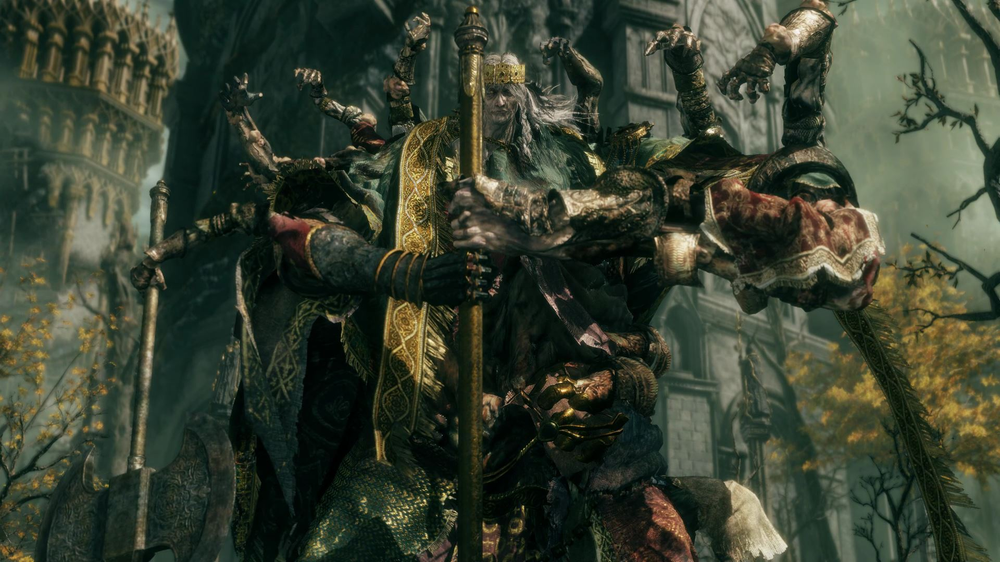
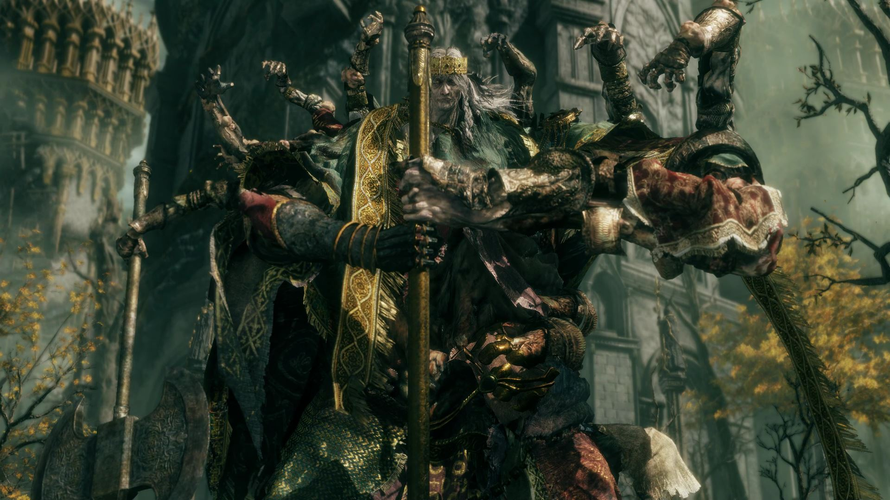

História de Elden Ring
Elden ring conta a história da queda da Ordem Dourada após a Rainha Marika quebrar a Elden Ring.
Semideuses lutaram entre si, o mundo entrou em ruína e os Maculados retornaram para decidir o futuro das Terra Intermédias.
No fim, você escolhe qual nova ordem governará o mundo ou se tudo deve ser destruído.
1. A era Pré-Erdtree - O Caos Antes da Ordem
Antes da Erdtree existir, as Terras Intermédias eram governadas por forças primitivas.
A mais poderosa delas era:
O Flameo Frenético
Uma entidade do Caos absoluto que queria unir toda a vida em uma única mente destruindo a individualidade.
Num passado distante,
não havia morte verdadeira, não havia ordem, só sobrevivência e caos.
2. A Chegada da Greater Will - A Ordem Dourada
Vindo de fora do mundo, um poder cósmico chamado
Greater Will enviou seus mensageiros:
- Os Elden Stars
- Os Two Fingers
- E o poder da Elden Ring (um conjunto de runas que definem a realidade).
Com esse poder, a Greater Will criou a
Ordem Dourada, uma nova lei que governaria tudo.
A Erdtree nasceu, brilhando como símbolo da vontade divina.
3. A Ascensão de Queen Marika, a Eterna
A Greater Will escolheu
Marika como sua Empírea, um ser com potencial para se tornar um deus substituto.
Ela removeu a Runa da Morte do Elden Ring e aprisionou sua portadora,
Maliketh, impedindo a morte natural.
Isso trouxe estabilidade... mas também desequilíbrio.
Marika casou com Radagon
E juntos governaram como:
- Marika, a Rainha-Eterna
- Radagon, o Rei-Consorte
Mas existe um segredo:
Radagon e Marika são o mesmo ser, duas metades de uma entidade divina.
4.Os Filhos de Marika - A Família Mais Quebrada da História
Marika teve vários filhos, todo semideuses, cada um governando uma região das Terras Intermédias.
Godfrey (primeiro marido) e seus filhos
Radagon (quando era separado dela) e Rennala
Cada um deles desejava poder, mas cada um tinha uma trágedia costurando seu destino.
5. A Noite Negra - A Ruptura do Ciclo da Morte
Ranni, filha de Radagon e Rennala, odiava a ordem imposta pela Greater Will.
Ela queria independência dos deuses externos.
Para isso, arquitetou a
Noite das Facas Negras
- A Runa da Morte foi roubada por Maliketh
- Parte dela foi usada para criar as Facas Negras
- Godwyn, o Príncipe Dourado, foi assassinado.
Godwyn foi o primeiro a
morrer sem morrer, sua alma morreu, mas seu corpo permaneceu vivo, apodrecendo e espalhando a Morte-Viva.
Ranni matou seu próprio corpo físico e deixou sua alma livre, quebrando o controle da Greater Will.
Isso abalou a Ordem Dourada até o núcleo.
6. A Queda: A Guerra dos Semideuses
A morte de Godwyn levou a Terras Intermédias ao caos.
Os semideuses começaram a lutar pelo controle da Elden Ring, agora fragmentada.
Essa guerra é chamada de
A Shattering (A Ruptura).
Famílias e regiões caíram em loucura
- Radahn segurou as estrelas e enlouqueceu pela podridão escarlate.
- Rykard se uniu a uma serpente devoradora.
- Mohg sequestrou Miquella e tentou criar sua própria dinastia.
- Morgott tentou desesperadamente defender Leyndell do caos, mesmo sendo odiado como "impuro".
- Rennala perdeu a sanidade.
- Melania devastou Caelid em uma explosão de podridão.
As Terras Intermédias se tornaram irreconhecíveis.
7. Marika Quebra o Elden Ring
Num ato final de rebelião, Marika
quebra a Elden Ring com um martelo, rejeitando a Greater Will.
A Greater Will responde aprisionando Marika dentro da Erdtree.
E assim nasceu o estado do mundo no início do jogo
- O trono está vazio
- Os semideuses estão loucos, caídos ou isolados
- A morte natural não existe
- E a árvore divina bloqueia a entrada para si mesma.
8. Os Maculados - Os Exilados Chamados de Volta
Você é um
Tarnished (Maculado), descendente dos guerreiros expulsos por Marika no passado.
Com a queda da Ordem, um chamado ecoa:
"Rise, Tarnished... and become Elden Lord."
Os Maculados são trazidos de volta para restaurar a Ordem, ou destruí-la de vez.
9. Sua Jornada
O jogador, guiado pela Donzela Melina precisa:
- Derrotar semideuses
- Recuperar as Grandes Runas
- Abrir caminho até a Erdtree
- Decidir qual ordem substituirá a antiga.
Cada chefe é uma peça da tragédia familiar que destruiu o mundo.
10. O Desfecho: O Destino das Terras Intermédias
No final, você chega ao trono de Marika, onde encontra Radagon, sua outra metade, tentando impedir que você toque a Elden Ring.
Após derrotá-lo, enfrenta a forma final da Greater Will.
Elden Beast
A personificação viva da própria Ordem Dourada.
Finais Possíveis
1. Elden Lord - Restaurar a Ordem
você restaura a Elden Ring, assumindo o trono.
2. Age of Start - O Final de Ranni
O mais amado do jogo.
Você rejeita completamente a Greater Will e se torna consorte da deusa Ranni.
Ela cria uma nova era, guiada pela Lua Negra e pelo destino próprio, longe dos deuses externos.
3. Lord of Frenzied Flame - O Final do Caos
Se aceitar o Flameo Frenético, você destrói tudo, queimando as Terras Intermédias até as cinzas.
4. Mending Rune of the Fell Curse - O Final de Dung Eater
Corrompe a Ordem e espalha maldição eterna entre todos os nascidos.
 
